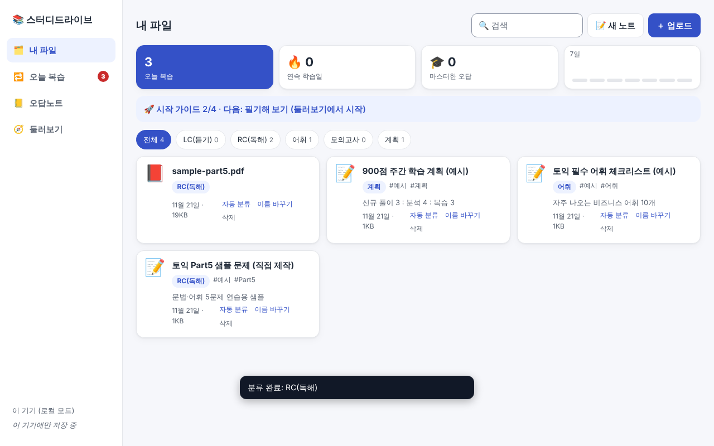
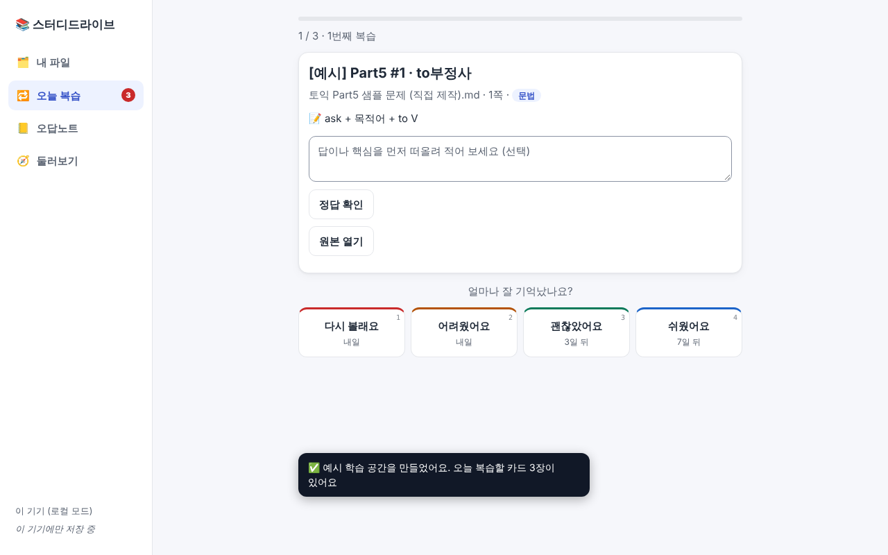

바이브코딩 경진대회 · 교육·학습 웹서비스 · 개인 출품
스터디드라이브
“문서를 올리면 내 오답이 내 복습표가 됩니다.”
PC·태블릿·폰 어디서든 이어서 공부하는 AI 학습 드라이브
PC · 태블릿 · 폰 동기화PDF 필기AI 해설·퀴즈4단계 간격 복습
지금 체험하기heojaeha00-ship-it.github.io/studydrive
① ‘가입 없이 체험하기’ ② 템플릿 시작 ③ 오늘 복습
3기기 이어쓰기
PC·태블릿·폰
7AI 기능
분류·해설·질문 등
4단계 복습 평가
1·3·7·14일
5노트 용지
백지·줄·모눈·점·코넬
11자동 점검 항목
tests/e2e.js
1문제 정의 — 기기를 바꿀 때마다 공부가 끊긴다
“태블릿에서 풀고, 폰으로 복습하고, PC로 정리하는데
자료·필기·오답이 기기마다 흩어져 있다.”페르소나: 토익 800→900을 목표로 기기 3개를 오가며 공부하는 대학생 (저자 본인의 경험에서 출발)
🔎 “그 파일 어디 있지?” — 자료를 찾는 데 학습 시간이 쓰인다
📒 오답노트는 손이 많이 가서 가장 먼저 포기된다
🧩 기존 서비스는 보관·필기·오답·복습이 따로따로 끊겨 있다
파일 보관→필기→오답 등록
↓
AI 해설·유사문제→간격 복습
↓
AI 맞춤 퀴즈→ 틀리면 자동으로 다시 오답노트 ↺
보관 → 풀이 → 오답 → 복습이 하나로 이어지는 폐루프
2해결 — 한 번 올리면 알아서 이어지는 학습 드라이브
☁️
기기 간 동기화
같은 계정이면 파일·필기·오답이 그대로. 설치 없이 열리는 PWA, 게스트 체험·계정 전환 지원.
🖍️
PDF 필기 · 빈 노트
다운로드 없이 열고 펜·형광펜 자동 저장. 백지·줄·모눈·점·코넬 노트는 맨 아래로 내리면 새 페이지가 붙는다.
🤖
AI 자동 정리
올린 파일을 AI가 읽고 카테고리·태그·요약을 붙인다. 스캔본은 첫 쪽 이미지를 읽는다.
📝
오답 1탭 → AI 해설
문제 쪽 이미지를 AI가 읽고 해석·정답 근거·틀린 이유·요령·유사 문제 2개를 만든다.
🔁
회상 → 확신도 → 4단계 복습
먼저 떠올려 적으면 AI가 채점·평가 추천. 확신했는데 틀린 문제를 따로 알려 준다.
🎯
맞춤 퀴즈 · 카드 · 약점 분석
내 오답으로 퀴즈 5문제, 쪽에서 암기 카드, 틀린 이유 통계와 AI 약점 진단·주간 계획.
3처음 쓰는 사람도 3분 — ‘둘러보기’ 탭의 원클릭 세팅
🎯
토익 900 정복
파트별 폴더 · 예시 PDF 문제 · 복습 일정 · 토익 맞춤 오답 원인이 한 번에 만들어진다.
이 템플릿으로 시작🎓
대학 수업·시험 대비
과목 폴더 · 필기 연습 노트 · 개념 중심 오답 분류와 시험 대비 퀴즈.
이 템플릿으로 시작📜
자격증·공무원 기출
기출·요약·암기 폴더 · 시험이 가까운 사람용 촘촘한 1·2·4·7일 복습.
이 템플릿으로 시작
① 파일 올리기② 필기해 보기③ 오답 등록④ 복습 1회
AI는 이렇게 쓰였습니다
만드는 과정에서 · 서비스 안에서 — 그리고 교육적으로 왜 효과가 기대되는지
① 만드는 과정: 바이브코딩 + AI 심사 루프
- 불편 상황을 문장으로 설명 → AI와 기능 범위를 정해 핵심 흐름으로 축소
- Claude Code에 화면·DB·보안 정책을 단계적으로 지시해 구현
- AI 심사·디자인·학습과학·QA 에이전트가 점검 → 지적을 반영하는 반복
- 자동 점검 스크립트 11항목 통과 후 배포
AI 모의 심사 점수(대회 배점표 기준 자체 평가, 100점 만점)
② 서비스 안의 AI 7종 (서버 함수 한 곳에서 처리)
분류 카테고리·태그·요약
해설 문제 이미지 → 해설·유사문제
질문 보고 있는 쪽 근거 답변
카드 쪽에서 암기 카드 생성
퀴즈 내 오답 겨냥 5문제
채점 회상 답안 평가·추천
약점 오답 통계 진단·계획
안전장치 키 서버 보관·일일 한도
프롬프트 원칙: JSON 형식 고정 · 쪽 근거 우선(외부 지식은 ‘일반 지식’ 표시) · 실패 시 재시도·모델 폴백, 분류는 파일명 추정·퀴즈는 내 유사문제로 대체. 게스트 하루 20회·정식 60회.
4교육적 근거 — 기능이 학습과학에 대응한다
떠올려 적기회상 입력 → AI 채점
인출 연습 · Roediger & Karpicke 2006
간격 복습1·3·7·14일 · 시험 임박 프리셋
분산 학습 · Cepeda et al. 2006
확신도 체크‘확신했는데 틀림’ 알림
메타인지 · 오류 교정
목표·성장 가시화시험 D-day · 7일 기억률
목표 설정 · Locke & Latham 2002
※ 효과 검증은 저자 1인 사용 단계이며 일반화는 추후 과제입니다.
5화면

대시보드 · 자동 분류된 내 파일
확신도 → 회상 → 4단계 복습폰 · 원클릭 템플릿
6기존 서비스와 다른 점 · 60초 체험
NotebookLM·Knowt·RemNote
자료 이해·카드 중심. 여기는 내 오답이 복습 일정과 퀴즈로 이어진다.
Anki
카드를 직접 만든다. 여기는 문제 쪽을 AI가 읽어 해설·유사 문제를 만든다.
토익 문제 앱
제공 문제에서만 동작. 여기는 내가 가진 어떤 PDF든 필기·오답 등록.
가입 없이 체험하기
토익 템플릿 시작
오늘 복습: 회상→AI 채점
PDF 필기·AI 질문·오답 등록
AI 약점 분석·맞춤 퀴즈